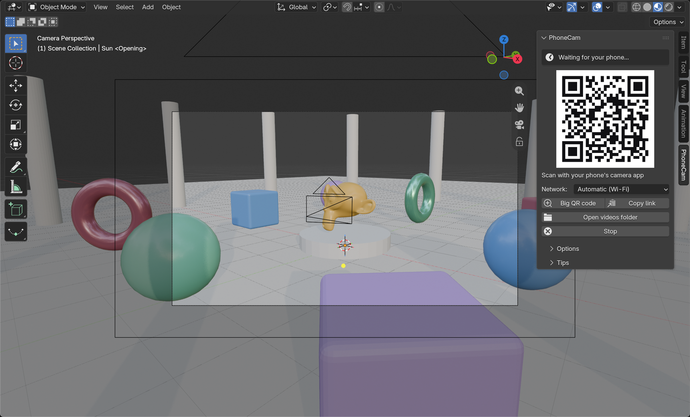
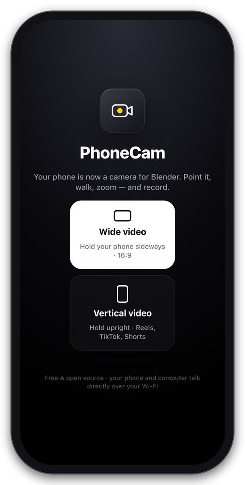
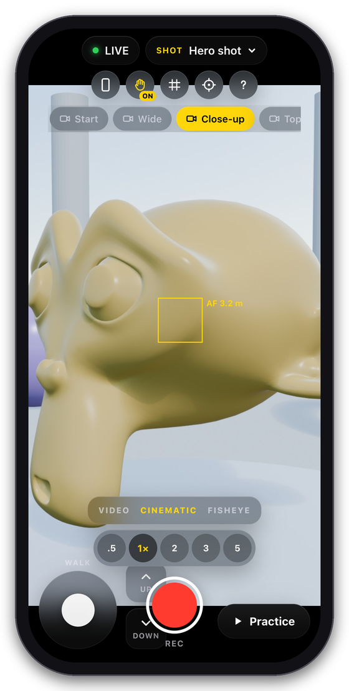

Film your 3D scene like real life
Hand-keyed cameras look robotic. A real handheld camera has life. PhoneCam gives Blender that life, using the phone you already own.
No app to install
Runs in Safari or Chrome. Scan a QR code and you're filming.
Your phone is the camera
Turn and tilt to aim. The on-screen stick walks the camera; ▲▼ raises and lowers it.
iPhone-style zoom
.5 · 1× · 2 · 3 · 5 lens buttons that glide, pinch-to-zoom and a zoom dial.
Video, Cinematic, Fisheye
Shallow depth of field with autofocus and tap-to-focus, or a super-wide fisheye.
Stabilizer
On, Action (gimbal-smooth) or Off for raw handheld energy.
16:9 or 9:16
Wide for YouTube, vertical for Reels, TikTok and Shorts.
Record, review, save
Watch the take on your phone, then Save or Retake. MP4 lands in your Videos folder.
Always smooth
Records full-speed phone motion and rebuilds the path, so heavy scenes never stutter. Motion blur included.
Uses your scene
Timeline markers become shots; every camera becomes a one-tap camera spot.
Private by design
Direct over your own Wi-Fi. No account, no cloud, no tracking, no internet needed.
Ride along
Film from inside a moving car, horse or spaceship in your scene.
Free forever
Open source (GPL-3.0). No ads, no subscription, no watermark.
Three steps
Install the add-on
Download the zip and drag it into Blender 4.2 or newer.
Click Start
Press N in the 3D Viewport, open the PhoneCam tab, click Start PhoneCam.
Scan & film
Scan the QR code with your phone's camera. First time: a 1-minute setup on the phone.
Install in Blender
PhoneCam is a Blender extension for Blender 4.2, 4.3, 4.4, 4.5 and 5.x.
- Download phonecam-1.0.0.zip from Releases. Don't unzip it.
- Drag the zip into the Blender window — or Edit → Preferences → Get Extensions → ⌄ → Install from Disk…
- Make sure PhoneCam is ticked.
- In the 3D Viewport press N → PhoneCam tab → Start PhoneCam.
- If your computer asks to allow incoming connections for Blender, click Allow.

Connect your phone
Phone and computer on the same Wi-Fi (a phone hotspot works too). Scan the QR code. The first time, your phone needs to trust your own computer — phones only share motion sensors with secure pages.
- Tap Download certificate → Allow → Close.
- Settings → Profile Downloaded → Install (passcode) → Install → Done.
- Settings → General → About → Certificate Trust Settings → switch on PhoneCam on … → Continue.
- Back in Safari, the camera opens by itself. Tip: Share → Add to Home Screen.


How to film
| Move / tilt your phone | Aim the camera |
| WALK stick | Move forward, back, left, right |
| UP / DOWN | Raise or lower the camera |
| .5 · 1× · 2 · 3 · 5 | Glide to a lens, like the iPhone camera |
| Pinch · slide the lens buttons | Smooth zoom |
| VIDEO · CINEMATIC · FISHEYE | Change the look. In Cinematic, tap the picture to choose what is sharp |
| ⊙ Reset aim | The camera points where your phone points |
| ▭ / ▯ | Wide 16:9 or vertical 9:16 |
| ✋ Stabilizer | On → Action → Off |
| Practice | Rehearse without recording |
| Red button | Record, then Watch, Retake or Save video |
Shots come from timeline markers (M in the timeline). Camera spots are the cameras in your scene. Every take is also kept as keyframes on the PhoneCam camera, ready to tweak.
Troubleshooting
The QR link doesn't open or says it can't connect
Phone and computer must be on the same Wi-Fi. Café, school and guest networks often block devices from seeing each other — use your phone's hotspot instead. Allow Blender through your firewall. If your computer has several networks (VPN, virtual machines), pick the right one in the PhoneCam panel's Network menu.
Safari says “This connection is not private”
Finish the one-time certificate setup, including Certificate Trust Settings on iPhone.
The controls won't turn sideways
Turn off your phone's rotation lock in Control Center, or choose Vertical video.
Fisheye is greyed out
Fisheye uses ffmpeg. Install it (brew install ffmpeg on macOS, winget install ffmpeg on Windows, sudo apt install ffmpeg on Linux) and restart Blender.
The live preview is slow
Big scenes draw slower. The saved video is always smooth — the preview is only for framing. Keep “Lighter viewport while filming” on.
FAQ
Can I use my phone as a camera in Blender?
Yes — that's exactly what PhoneCam does. Install the add-on, click Start, scan the QR code with your iPhone or Android phone, and the phone becomes Blender's camera.
Is PhoneCam really free?
Yes. Free forever and open source under GPL-3.0. No ads, no account, no paid tier, no watermark.
Do I need to install an app on my phone?
No. It runs in Safari (iPhone) or Chrome (Android). Add it to your Home Screen for a full-screen app.
Does it need the internet?
No. Your phone talks to Blender directly over your local Wi-Fi. Nothing goes to the cloud.
Which Blender versions and computers?
Blender 4.2 and newer on macOS, Windows and Linux.
Why does the phone ask me to install a certificate?
Phones only share motion sensors with secure (https) pages. PhoneCam makes a private certificate on your own computer; trusting it once lets your phone connect securely. The QR code also carries a private pairing key, so other people on the same Wi-Fi can't take over your camera.
Where are my videos saved?
In Movies/PhoneCam (macOS) or Videos/PhoneCam (Windows, Linux) — click Open videos folder in the PhoneCam tab. You can change it under Options.
Ready to film?
Free, open source, and made for everyone who wants their Blender camera to feel real.